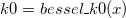

/math-26a694e462007bb777ecf1e00f490491.png "K_0\left( x\right)") . The function is based on Chebyshev expansions.
. The function is based on Chebyshev expansions. evaluates an approximation to the modified Bessel function of the second kind,. The function is based on Chebyshev expansions.
For more information please review the s18acc function in the NAG document.